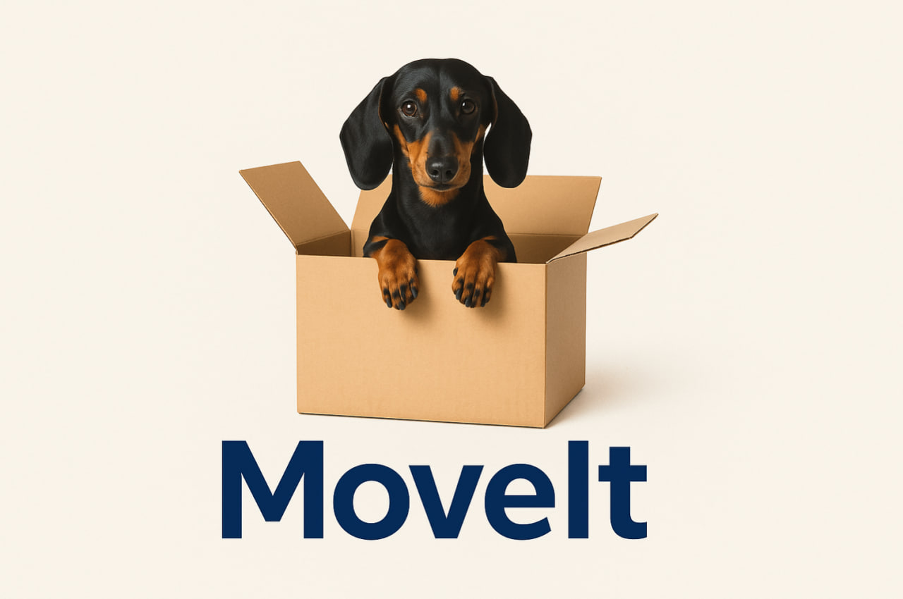

O...Marketing
(Click on the picture to view)
A responsive, single-page landing site for a digital marketing agency with a filterable portfolio, animated logo slider and smooth-scroll navigation.
Built with semantic HTML5, vanilla CSS (mobile-first media queries),
jQuery for smooth-scroll & menu toggle,
Slick Carousel for the blog slider,
MixItUp for portfolio filters and
Fancybox for the lightbox video.
View Repository

BookVerse Club
(Click on the picture to view)
A single-page book-rental landing site that lets readers quickly browse and filter a curated catalog, place a rental order, and pick a subscription plan—all in just a few clicks.
Built with semantic HTML5, vanilla CSS (mobile-first with Flexbox and column-count grid),
jQuery for smooth-scroll & mobile menu toggle,
MixItUp for catalog filtering and
Slick Carousel for touch-friendly sliders.
Design drafted in Figma.
View Repository
Move It
(Click on the picture to view)
A responsive landing page for a moving services startup designed to build trust and guide users toward conversion with clear CTAs.
Built with Bootstrap 5, it features a navbar with dropdowns, a postcode checker, a hero section with buttons, service cards with icons, a testimonial carousel, emotional quotes, and a multi-column footer.
Perfect for showcasing Bootstrap layout skills, responsive design, and customer-focused messaging.
View Repository

Tin Dog
(Click on the picture to view)
A fun and responsive landing page for a fictional dog dating app, designed to entertain and engage pet lovers.
Built with Bootstrap 5, this project features a vibrant hero section with download buttons, playful feature cards with icons,
a testimonial section with press logos, pricing plans for different dog “breeds,” and a structured multi-column footer.
Perfect for showcasing responsive layout techniques, Bootstrap component usage, and creative branding in a lighthearted project.
View Repository
Simon Game
(Click on the picture to view)
I built a classic memory game where you repeat a growing pattern of colors and sounds.
It’s made with HTML, CSS, and jQuery and includes animated button states, keyboard/tap start,
sound effects, a level counter, and a simple game-over screen.
I use timed delays to sync the lights and audio for a smooth feel on both desktop and mobile.
This project shows my work with state management, array + timing logic, event handling, and clean DOM updates.
View Repository
Drum Kit Game
(Click on the picture to view)
I built an interactive drum kit you can play with your keyboard (W, A, S, D, J, K, L) or by tapping the pads.
Made with HTML, CSS, and vanilla JavaScript, each pad fires its own sound using the HTML5 audio element and pops with a quick “pressed” animation.
The layout is responsive and feels snappy on desktop and mobile.
This project highlights event handling, clean DOM updates, micro-interactions, and straightforward audio playback in the browser.
View Repository
Mondrian Painting
(Click on the picture to view)
I recreated a Piet Mondrian-style composition using pure HTML and CSS - no images.
The layout is built with CSS Grid: fixed track sizes, grid-column/grid-row spans for each block,
and a global grid gap with a black background to form the bold lines. Color panels (red, blue, yellow, and neutrals)
are placed precisely to match the original proportions.
This project highlights my CSS Grid layout skills, attention to spacing and alignment, and clean, framework-free markup.
View Repository